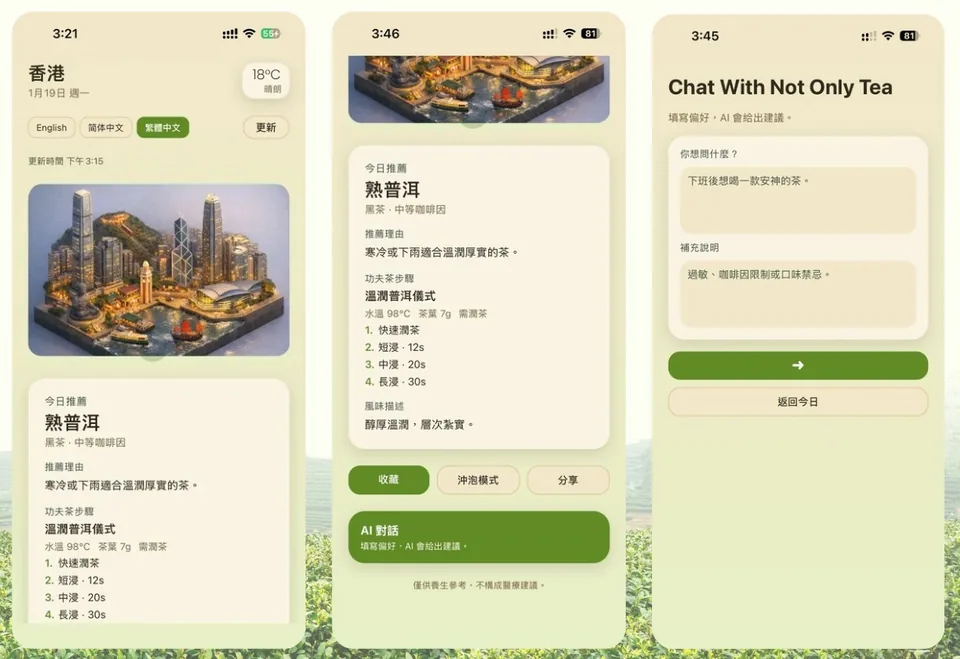

Application / Mobile app
Not Only Tea
Weather, tea recommendations, and conversation in one mobile-app exploration.

The idea behind the interface.
An existing mobile-application project combining a weather view with tea recommendations and a chat interface. The supplied multi-screen preview captures the app's core interaction surfaces.
In the supplied preview
- Weather information in a mobile-first interface.
- Tea recommendations alongside the day's conditions.
- A chat screen within the same app experience.
Scope & context
Presented from the original portfolio screenshot. A store listing, live backend, and implementation stack were not supplied.